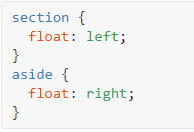

Позиционирование через inline-block
В дополнение к использованию float, ещё один способ, которым мы можем позиционировать контент — это применение свойства display в сочетании со значением inline-block. Метод с inline-block, в первую очередь полезен для компоновки страниц или для размещения элементов в линию рядом друг с другом.
Напомним, что значение inline-block для свойства display отображает элементы в линию и позволяет им принимать все свойства блочной модели, включая height, width, padding, border и margin. Применение inline-block позволяет нам в полной мере воспользоваться блочной моделью, не беспокоясь об очистке каких-либо float.
Для наглядности создадим вначале общий макет страницы с шапкой вверху, двумя колонками в центре и подвалом внизу с помощью свойства float
float на практике
В идеале эту страницу следует разметить с помощью элементов <header>, <section>, <aside> и <footer>. Внутри элемента <body> HTML может выглядеть так:

Демонстрация макета без float
<header>
<section>
Здесь элементы <section> и <aside> являются блочными, поэтому они укладываются один поверх другого по умолчанию. Однако мы хотим, чтобы эти элементы располагались бок о бок. Установив float для <section> как left, а для <aside> как right, мы можем позиционировать их как две колонки, расположенных напротив друг друга. Наш CSS должен выглядеть так:

Для справки: обтекаемые элементы располагаются по краю родительского элемента. Если нет родителя, обтекаемый элемент будет располагаться по краю страницы.
Когда мы устанавливаем элемент обтекаемым, то убираем его из обычного потока HTML-документа. Это приводит к тому, что ширина этого элемента по умолчанию становится шириной его содержимого. Иногда, например, когда мы создаём колонки для многократно используемого макета, такое поведение нежелательно.
Это можно исправить путём добавления свойства width с фиксированным значением для каждой колонки. Кроме того, чтобы обтекаемые элементы не соприкасались друг с другом, в результате чего содержимое одного элемента располагается рядом с другим, мы можем использовать свойство margin, чтобы установить пространство между элементами.
Ниже мы расширяем предыдущий блок кода, добавив margin и width для каждой колонки, чтобы лучше формировать наш желаемый результат.
Демонстрация макета с float
<header>
<section>
float: left;
float могут изменить значение display у элемента
Для обтекаемого элемента также важно понимать, что элемент удаляется из обычного потока страницы и что у элемента может измениться значение display, заданное по умолчанию.
Свойство float опирается на то, что у элемента значение display задано как block и может изменить значение display у элемента по умолчанию, если он ещё не отображается как блочный элемент.
Например, элемент, у которого display указан как inline, такой как строчный <span>, игнорирует любые свойства height или width. Однако, если для строчного элемента указать float, значение display изменится на block и тогда элемент уже может принимать свойства height или width.
Когда мы применяем float для элемента, то должны следить за тем, как это влияет на значение свойства display.
Для двух колонок вы можете установить float, для одной колонки как left, а для другой как right, но для нескольких колонок нам придётся изменить наш подход. Скажем, к примеру, мы хотели бы получить ряд из трёх колонок между нашими элементами <header> и <footer>. Если мы выбросим наш элемент <aside> и воспользуемся тремя элементами <section>, наш HTML может выглядеть следующим образом:
Чтобы расположить эти три элемента <section> в строку из трёх колонок, мы должны задать float для всех элементов <section> как left. Мы также должны настроить ширину <section> с учётом дополнительных колонок и расположить их один рядом с другим.
Здесь у нас есть три колонки, все с равной шириной и значением margin, а также с float, заданным как left.
Демонстрация трёхколоночного макета с float
<header>
<section>
float: left;
<section>
float: left;
<section>
float: left;